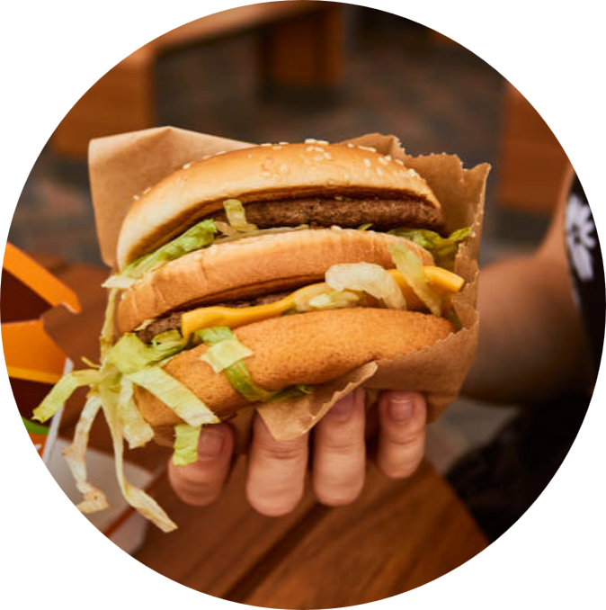
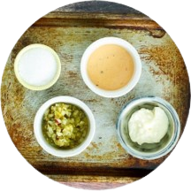

Recipes
Big Mac
Ingredients
- Ground meat
- Salt&Pepper
- Butter
- American Cheese
- Minced Onion Pickle Slices
- Lettuce
- Special Sauce
- You will first season the hamburger meat with salt and pepper.
Shape into 10 thin patties. Grill the patties to your liking.
- Spread butter on cut sides of the buns and add to grill until it browns slightly.
Make sure the middle bun to asts on each side.
- Add the secret sauce, lettuce, cheese, onions and one patty to the bottom bun.
Top it off with the middle bun.
- Then add the sauce. lettuce, pickles, onion and another patty to the middle bun.
Top with the top bun and you are all set.

Special Sauce
Ingredients
- Mayonnaise
- India Relish
- Sugar
- Thousand Island Dressing
- Simply stir all of the ingredients together in a small bowl.
- Let sauce stand for 20 minutes before using it so all the flavors can co me together.
